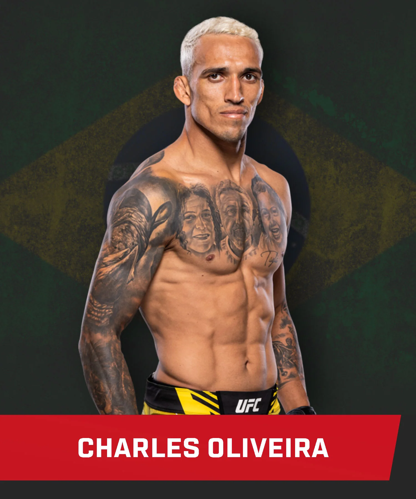
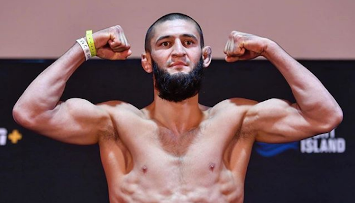
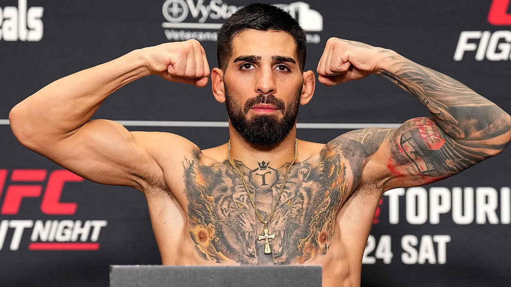

Top 3 UFC Fighters 2024
Charles Oliveira da Silva[1] (born October 17, 1989) is a Brazilian professional mixed martial artist[5] and fourth degree black belt Brazilian jiu-jitsu practitioner.[a] Oliveira currently competes in the Lightweight division of the Ultimate Fighting Championship (UFC), where he is the former UFC Lightweight Champion. As of April 16, 2024, he is #2 in the UFC lightweight rankings and as of November 19, 2024, he is #15 in the UFC men's pound-for-pound rankings.[8]
Oliveira started training Brazilian jiu-jitsu in his youth, achieving multiple championship titles before transitioning to MMA in 2007.[5][9] Oliveira holds multiple UFC records, notably the most submission wins in the organization's history at 16, most finishes at 20 and most bonuses at 20.[10][11]
Early Life
From humble origins, Oliveira was born in the favela of Vicente de Carvalho in the town of Guarujá, São Paulo, Brazil on 17 October 1989.[12] At age 7, he was diagnosed with heart murmur and rheumatic fever, and told by a doctor that he couldn't play sports. His parents decided instead to let him play sports and his condition healed over time. At 12 years old, Paulo, a neighbor, introduced him to a Brazilian jiu-jitsu gym where trainer Roger Coelho gave free classes to low-income people. His family helped fund his training by selling street snacks and discarded cardboard. Oliveira trained hard and became São Paulo champion only two months after starting jiu-jitsu.[13]
Khamzat Chimaev
Khamzat Khizarovich Chimaev[b] (born 1 May 1994) is a Russian[15] professional mixed martial artist and freestyle wrestler who competes in the Middleweight division of the Ultimate Fighting Championship (UFC).[16] In freestyle wrestling, Chimaev is a three-time Swedish national champion.[17] As of 29 October 2024, he is #3 in the UFC middleweight rankings.[18]
Early life and career
Chimaev was born on May 1, 1994 to a Chechen family.[2][3] He was born in the village of Gvardeyskoye, then part of the Chechen Republic of Ichkeria but now part of Russia's Chechnya.[19] He started wrestling at the age of five in the village of Gvardeyskoye.[20] It has been reported he won a bronze medal at the Russian National Championships in the junior level.[21][22] In 2013, when he was 18, he emigrated to Sweden with his mother, joining his older brother.[23] However, despite living in Sweden for years, Khamzat never acquired a Swedish citizenship, keeping his Russian citizenship. In 2023, Khamzat moved to the UAE.[24][25]
Ilia Tofuria
Ilia Topuria (Georgian: ილია თოფურია;[9] born January 21, 1997) is a Georgian[1] and Spanish[2] professional mixed martial artist. He currently competes in the Featherweight division of the Ultimate Fighting Championship (UFC), where he is the current UFC Featherweight Champion and the first Georgian fighter to win a UFC championship. As of July 30, 2024, he is #4 in the UFC men's pound-for-pound rankings.[10]
Background
Topuria was born in Halle Westfalen, Germany[11][12][13][14] to Georgian parents who were refugees from Abkhazia.[8][15]
At the age of seven, Topuria moved to Georgia with his family and started practicing Greco-Roman wrestling at a local school.[8] At the age of 15, he again relocated to live in Alicante in Spain, where he started practicing martial arts at the Climent Club.[16] In 2015, he made his debut as a professional in local competitions.[17][8] Topuria has an older brother, Aleksandre, who is also a professional mixed martial artist signed to the UFC.[18]
Initially coming into the UFC organization with a strong base in Brazilian Jiu-Jitsu, Topuria dedicated himself to enhancing his stand-up game, particularly his boxing, under the guidance of experienced coaches. His boxing style is marked by precise shot selection, fluid combinations, and remarkable power, which was on full display during his knockout victories over Max Holloway and Alexander Volkanovski in 2024. Topuria's approach to boxing is strategic, using his footwork and positioning to set up clean, fight-altering punches. His ability to land powerful strikes while maintaining composure has made him one of the most dangerous all around fighters in the division.[19][20]